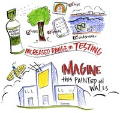
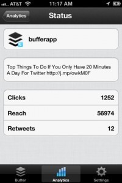
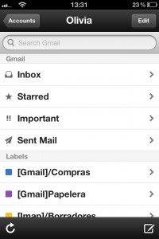
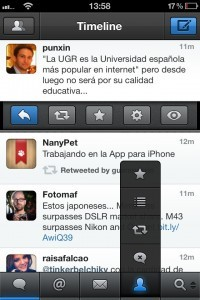
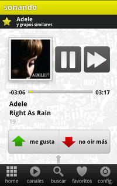
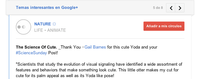
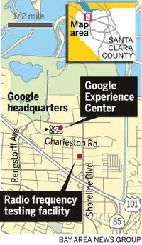
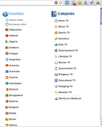
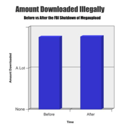
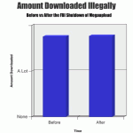

Tuenti presenta dos tarifas con 1GB por 6€ y 3GB por 15€ para cambiar el mercado móvil en España
Wed, 15 Feb 2012 01:31:57 PST
Desde hace unas semanas venimos hablando de lo que está pasando en Europa con las tarifas móviles. Estos cambios vienen principalmente encabezados por la tarifa que presentó Free en Francia en la que por 20€ al mes ofrecen llamadas y SMS ilimitados y 3GB de Internet, una auténtica barbaridad que ha llevado a la compañía [...]
Desde hace unas semanas venimos hablando de lo que está pasando en Europa con las tarifas móviles. Estos cambios vienen principalmente encabezados por la tarifa que presentó Free en Francia en la que por 20€ al mes ofrecen llamadas y SMS ilimitados y 3GB de Internet, una auténtica barbaridad que ha llevado a la compañía a alcanzar las 150.000 portabilidades al día durante los primeros días de la tarifa.
¿Y qué pasa en España? Pues que estábamos parados. Las OMV están muy bien, pero la diferencia con lo que ofrecen las grandes compañías sólo está bien para aquellos que llaman poco o para ciertas condiciones puntuales. Aunque muchas veces sean más económicas, el cambio no es radical. Sin embargo esta mañana hemos estado en la presentación del nuevo Tu, la OMV de Tuenti que depende de Movistar, y nos hemos quedado con la boca abierta. Os contamos todas sus novedades.
La primera compañía telefónica 2.0
No todos los cambios están en las tarifas, también el funcionamiento es importante. Tu es la OMV de Tuenti, y uno se tiene que alimentar del otro. Para ello han decidido integrar todos los servicios de Tu en Tuenti, es decir, que podremos consultar los SMS, mensajes del buzón de voz y agenda directamente desde allí. Todo queda integrado, amigos y contactos, ahora Tuenti es Tu y Tu es Tuenti.
La idea está muy bien pensada, y las posibilidades son enormes. Tuenti ahora no es sólo una red social, sino que funciona además como plataforma de autogestión de tu línea de teléfono. Algo muy interesante es que para darle el teléfono a alguien no hace falta hacerlo así, sino que con nuestro nombre nos podrá llamar. Por supuesto todo esto es configurable, y está muy bien hecho para que no suponga una violación de privacidad. Es decir, que no cualquier nos podrá llamar sólo sabiendo nuestro nombre.
Pero en todo esto Tuenti seguirá trabajando, y las ideas que tienen son muy buenas. En los próximos meses quieren lanzar nuevas aplicaciones y servivios con los que ofrecer un teléfono en la nube, donde todos los servicios dependan de Tuenti. La propuesta es excelente, pero se que a muchos no os va a gustar por estar tan ligado a Tuenti. Pero seguid leyendo hasta las tarifas, a ver si así os convence.
Las nuevas tarifas
Pero lo que más llama la atención y sobre lo que todos queréis oír hablar son las tarifas. ¿Cuánto vamos a pagar? Pues vamos a ello.
Estamos hablando de tarifas prepago, no hay contrato de permanencia ni consumo mínimo, no hay cuenta domiciliada, es prepago, y esto es lo importante y lo rompedor de la tarifa.
Podemos hablar con cualquier persona por 3 cent/minuto + 15 cent de establecimiento de llamada. Precio fijo, sin horarios ni límite de minutos. Anexo a esta tarifa, tenemos el plan de navegación de datos, imprescindible en la telefonía moderna. Por un lado, la opción de 1 GB por 6€ al mes (el primer mes es gratis a modo de promoción) y una opción superior de 3 GB a 15€/mes.
Dos pegas que tenemos aqui. Estas tarifas son promocionales, y no han informado durante cuanto tiempo durarán, ni si los que empiecen ahora con la promoción podrán seguir accediendo por ese precio cuando acabe, y esto es lo que más preocupa. Además es obligatorio ser usuario de Tuenti, aunque esto era de esperar, no imaginábamos que esto pudiese ser de otra manera.
Una propuesta muy interesante por parte de Tu, que llega en un momento en el que los operadores móviles se encuentran en una situación muy delicada y a la que esto nada ayuda. ¿Qué te parece? ¿Contratarías una tarifa con Tu?
Para más información: Tuenti
Google Maps se actualiza con Mis Sitios: Más información sobre lo que visitas
Tue, 14 Feb 2012 23:24:49 PST
Google Maps es uno de los servicios más usados de Google, y una de las cosas que más me gusta es que se actualiza constantemente. Siempre están buscando mejoras para darle un valor añadido, y nunca se quedan dormidos esperando a ver qué pasa. Una de las cosas que más se echaba de menos era [...]
Google Maps es uno de los servicios más usados de Google, y una de las cosas que más me gusta es que se actualiza constantemente. Siempre están buscando mejoras para darle un valor añadido, y nunca se quedan dormidos esperando a ver qué pasa.
Una de las cosas que más se echaba de menos era la facilidad de acceso a Mis Sitios, o aquellos lugares que hemos visitado, mapas que hemos creado etc.
Google ha actualizado hoy su servicio de mapas para añadir una nueva pestaña que nos da acceso directo a toda la información sobre tus sitios (mis sitios). En la barra lateral izquierda ahora encontraremos la nueva pestaña al lado de la única que había hasta ahora, “Cómo llegar”.
Al pinchar sobre “Mis Sitios” entraremos en un nuevo menú que deja filtrar mostrando todos, mapas, visitados y más (destacados y puntuados). Al pinchar sobre cada una de estas se despliega una lista con los lugares que hemos visitado o tenemos como destacados, así como los mapas que hemos creado.
Dentro de cada uno de estos lugares nos da opciones extras como localizarlos en el mapa, indicaciones para llegar o escribir un comentario sobre el lugar.
Por supuesto para que todo esto funcione correctamente tenemos que estar logueados con nuestra cuenta de Google, ya que toda esta información va asociada. Pequeña pero muy interesante actualización de Google Maps que nos simplifica mucho el acceso a estas opciones.
Bittorrent Live: ¿El streaming P2P que acabará con la televisión?
Tue, 14 Feb 2012 10:29:34 PST
Desde el cierre de Megaupload y los sucesivos acontecimientos que han ido ocurriendo después del mismo el uso del P2P ha vuelto a ponerse más de moda que nunca. Un protocolo que existe hace muchísimo tiempo y que ya en su momento revolucionó el modo de comunicarnos y compartir información. Pues su creador, Bram Cohen, vuelve [...]
Desde el cierre de Megaupload y los sucesivos acontecimientos que han ido ocurriendo después del mismo el uso del P2P ha vuelto a ponerse más de moda que nunca. Un protocolo que existe hace muchísimo tiempo y que ya en su momento revolucionó el modo de comunicarnos y compartir información.
Pues su creador, Bram Cohen, vuelve nuevamente a la carga presentando un sistema de streaming bajo un protocolo P2P similar a Bittorrent que puede suponer un cambio drástico en la forma de consumir entretenimiento en internet. Cohen ha hecho una primera demostración de su nuevo proyecto llamado Bittorent live. Vídeos en streaming ya sea en directo o no, a alta calidad y con sólo unos segundos de latencia. Bram Cohen quiere matar la televisión y quien sabe si lo conseguirá, pero Bittorrent Live pinta muy, muy bien. Cohen quiere con Bittorent live darle la estocada final a un medio, la televisión, que poco a poco parece que se va haciendo más y más obsoleto. Y no es que sea porque sí, desde el auge de internet y sobretodo desde el despegue de las redes sociales la televisión ha visto como la inversión en publicidad va cayendo mientras va subiendo en internet. Eso nos dice algo importante. Además la audiencia ha cambiado, conoce, busca y elige lo que quiere ver y cuándo lo quiere ver.
Bittorrent live proporciona los medios para poder hacer retransmisiones de todo tipo de eventos, y gratis o bastante baratos. Teniendo en cuenta las posibilidades que Bittorrent Live ofrece totalmente gratis, no es necesaria una inversión previa para poder retransmitir a miles y miles de personas como ahora lo hace la televisión. Y lo hace gracias a que el contenido se descarga de los diferentes usuarios que están viendo el stream, es decir, funciona como funciona actualmente la descarga de archivos Bittorrent.
Es tanta la ventaja que servicios como Netflix o Hulu podrían beneficiarse de Bittorrent Life, abaratando así sus costes. Esta tecnología P2P incluso podría tener que hacer replantearse su forma de negocio a portales como Ustream o Livestream, que ofrecen un servicio similar pero que no es gratuito.
Lo importante en el funcionamiento de Bittorrent Live es el fujo de espectadores. Pues es entre los espectadores que se realiza la descarga del contenido, no de una fuente central. Poder conseguir que la transferencia de la información dependa en un 99% de los usuarios y que aunque sean millones de espectadores sólo haya 5 segundos de retardo es algo que ha traído de cabeza durante 3 años a su creador. Pero ahora ya lo ha resuelto y es realmente fascinante.
Cohen no desea obtener beneficio de su nueva creación, siguiendo con la filosofía de Bittorrent. Es decir, un protocolo libre y abierto para todo el mundo. Trabajan ya en un SDK de desarrollo para poder utilizar el protocolo, y busca testear su tecnología. De momento se encuentra en fase beta aunque se puede descargar el cliente y probarlo. Para ello basta ir a la página oficial y seguir las instrucciones.
Desde luego Bittorrent live tiene una pinta espectacular y esperamos que pronto podamos ver más streamings de todo tipo. La nueva televisión a la carta podría ser una realidad gracias a este protocolo, libre de dinero, de intereses y posibles censuras. ¿Crees que desbancará a la tele?
Via | Techcrunch
Apple presentará el iPad 3 el 7 de Marzo
Tue, 14 Feb 2012 03:15:21 PST
Después de un año de rumores y de que en algunos sitios se empezase a hablar del iPad 3 incluso antes de que el iPad 2 llegase al mercado, por fin parece ser segura la presentación de la nueva tablet de Apple. Sabremos que será el 7 de Marzo, pero poco más. Casi seguro sabemos [...]
Después de un año de rumores y de que en algunos sitios se empezase a hablar del iPad 3 incluso antes de que el iPad 2 llegase al mercado, por fin parece ser segura la presentación de la nueva tablet de Apple. Sabremos que será el 7 de Marzo, pero poco más. Casi seguro sabemos también que será un iPad 3 y no un iPad 2S, aunque no sería raro que, como ocurrió con el iPhone 4S, Apple nos vuelva a sorprender.
Aunque todo esto es una recopilación de rumores, de los que sabéis que no nos gusta hablar, son ya muy fiables, y han ido pasando el filtro de un bombardeo rumorológico que lleva invadiendo la red varios meses. Patentes, peticiones, estudios y pruebas son las que han ido dejando lo que aquí os contamos como más probable. Insisto, esto es lo más probable, ya que Apple no ha dicho ni una palabra al respecto, y tampoco hemos querido darle bombo a un evento de Apple con cada pequeño detalle que sale, ya que sabemos que estas cosas acaban cansando para que luego lo que se presente no sea nada del otro mundo.
¿Por qué sabemos que se presentará el 7 de Marzo?
Pues este es todo un rumor, pero parece ser que la fecha está ya más que decidida. Podemos hablar del estudio que hay sobre esto, pero básicamente las fechas que AllThingsD, iMore y The Loop rumorearon han coincidido y todo parece indicar que es una fecha perfectamente elegible por Apple. Rara vez los medios que más apuestan por las fechas de presentaciones se ponen todos de acuerdo, así que es muy significativo.
Todavía no se ha enviado ninguna invitación oficial al evento, pero podéis tener por seguro que dentro de muy poco empezarán a aparecer. Esa será la confirmación definitiva de la fecha del evento.
Características del nuevo iPad
Una de las principales y más esperadas características que se esperan es de las más probables que veamos en el nuevo iPad, ya que esté contará con la famosa Retina Display, una tecnología que aumenta la resolución de la pantalla y ofrecerá 2048×1536 píxeles para este iPad que llevará una pantalla de 9.7″ ó 10″. De este modo se aumenta la calidad de la imagen y se ve mucho mejor, como ocurre desde el iPhone 4, pero Apple sorprendió dejándolo fuera del iPad 2.
Respecto al hardware interno es difícil, pero las apuestas van todas para el chip Apple A6 de cuatro núcleos. Hablar de una evolución tan grande de procesador para Apple es complicado, ya que no son dados a ellos, y basan sus novedades en experiencia de usuario y no en hardware puro y duro. Es decir, que si funciona bien no importa que lleve 2, 4 ó 6 núcleos. Si fuera por mi apostaría a que será dual-core, pero todo apunta a que el quad-core A6 será el chip del nuevo iPad.
Se espera una pequeña evolución en la cámara, y dudo mucho que esta supere los 5MP. Apple es muy consciente de lo poco que se usa la cámara en las tablets, y poner una buena cámara sólo serviría para aumentar los costes de fabricación y por lo tanto su precio en el mercado. Así que podéis olvidar la cámara de 8MP, Apple no la pondrá en el nuevo iPad.
¿Y nuestro amigo Siri? Pues lo lógico es que, aunque por ahora sólo exista oficialmente en el iPhone 4S y ni siquiera en el iPhone 4, Siri llegue al nuevo iPad de Apple.
¿iPad 3 ó iPad 2S?
Difícil saberlo, pero casi todo el mundo coincide con que será un iPad 3 y no 2S. Yo también estoy de acuerdo con esta afirmación, ya que al contrario que en el mundo de la telefonía móvil, en el de las tablets hay que evolucionar con saltos mayores, por ser dispositivos que no necesitan tanta renovación, porque su ciclo de vida es mucho mayor. No tiene sentido presentar pequeñas mejoras sobre el iPad 2 para sacar al mercado un iPad 2S como si podría ocurrir con el iPhone, y por eso Apple presentará un iPad 3. O al menos eso sería lo lógico.
¿Un iPad de 8″?
Una de las grandes novedades para esta presentación es la de un nuevo tamaño de iPad de 8 pulgadas. Todo viene de fuentes anónimas de compañías que suministran equipo para los dispositivos de Apple, que han informado a The Wall Street Journal que estos les estarían enseñando diseños de modelos de 8″. La idea encaja perfectamente con lo que parece que se necesita ahora para responder al Kindle Fire de Amazon, una tablet más pequeña y más barata para competir en un mercado diferente al del iPad 3.
La idea tiene mucho sentido, y no tengo ninguna duda de que, pese a que Steve Jobs criticó y afirmó que las tablets pequeñas son absurdas, Apple está pensando en un modelo más pequeño y barato para competir con la Fire. Sin embargo una cosa es que estén enseñando modelos a sus proveedores y otra muy diferente que para el 7 de Marzo tengan todo listo para presentar al público. Creo que Apple está pensando en una nueva gama de iPad, que incluso podría incluir más modelos que el de 8″, pero no creo que la presenten el 7 de Marzo.
¿Llevará LTE?
El famoso 4G que tan de cabeza nos trae. Para los que no lo conozcáis, LTE es la evolución del 3G, que como os imaginaréis permite más velocidad de conexión y mejora en todo al 3G. Además los terminales LTE funcionan en la misma banda para Internet y llamadas. El problema del LTE es que está muy poco extendido, y además de EEUU (que tampoco tiene la mejor infraestructura) pocos países cuentan con esta tecnología. España tiene red LTE, pero no está en funcionamiento, así que no cuenta.
Todo parece indicar que el iPad 3 llevará LTE, y desde The Wall Street Journal hasta los medios tecnológicos más importantes se han hecho eco de esta característica. Sin embargo soy partidario de pensar que el iPad 3 no contará con LTE, aunque eso y todo lo demás sólo lo sabremos con seguridad el 7 de Marzo en el evento de Apple.
La historia detrás del Doodle de Google de San Valentín
Mon, 13 Feb 2012 23:46:25 PST
Google ha querido sorprendernos el día de San Valentín con un Doodle muy especial, y aunque cabría esperar uno de este estilo para fechas más representativas como Navidad o Año Nuevo, esta vez ha caído en el día de los enamorados, donde en lugar de una imagen o pequeña animación, nos han deleitado con un [...]
Google ha querido sorprendernos el día de San Valentín con un Doodle muy especial, y aunque cabría esperar uno de este estilo para fechas más representativas como Navidad o Año Nuevo, esta vez ha caído en el día de los enamorados, donde en lugar de una imagen o pequeña animación, nos han deleitado con un minicorto que cuenta la historia de amor y desamor de dos jóvenes.
Para el poco más de minuto de duración de esta historia, Google contó con la colaboración del animador Michael Lipman, que se encargó de convertir las ideas y garabatos del equipo de Google en el corto que hoy podemos ver en la portada del buscador. Aunque parezca mentira, una animación de este estilo suele llevar unas 10 semanas para tenerla lista, pero Google le avisó con sólo 3.
Fue un trabajo a contrareloj, aunque Lipman sólo tuviese que animar lo que ya se había creado. Recibió mucha ayuda de parte de Google, e incluso se le permitió añadir algo de su creación, como el momento en el que el globo explota.
Espero que os guste el Doodle de Google de hoy, ya celebréis San Valentín o penséis que no es más que otro día más inventado para obligarnos a consumir.
La Comisión Europea aprueba la compra de Google a Motorola
Mon, 13 Feb 2012 10:57:12 PST
¿Creías que ya habíamos contado esto? ¿Qué Google había comprado Motorola ya? Pues si, no estás alucinando, pero estas cosas van lentas, y no son de un día para otro. Cuando uno se gasta casi 13 mil millones de dólares en comprar una empresa no puede esperar que todo se solucione en un par de [...]

¿Creías que ya habíamos contado esto? ¿Qué Google había comprado Motorola ya? Pues si, no estás alucinando, pero estas cosas van lentas, y no son de un día para otro. Cuando uno se gasta casi 13 mil millones de dólares en comprar una empresa no puede esperar que todo se solucione en un par de días, y aunque este acuerdo se cerrase el pasado Agosto, es ahora cuando la Comisión Europea ha dado el visto bueno a la adquisición de Motorola por parte de Google.
Pero esto es sólo un paso en el proceso de compra, ya que aunque muy importante, todavía queda camino por andar, ya que quedan organismos que tienen que aprobar la compra para que esta se lleve a cabo, y aunque no se espera ninguna sorpresa, los papeles hay que firmarlos.
Recordemos que esta compra es importantísima para Google, sobretodo en lo que respecta a Android, ya que incluye una serie de patentes trascendentales para librarse de demandas y poder combatir en condiciones en esta peculiar guerra de tribunales y papeleos del mundo de la tecnología.
Esteremos atentos para confirmar cuando la compra se haga definitiva.
Angry Birds llega a Facebook un día antes de lo anunciado
Mon, 13 Feb 2012 07:59:38 PST
Ya era oficial, Angry Birds, el popular juego en el que tenemos que derribar estructuras lanzando pájaros que quieren recueprar los huevos que les han robado unos cerdos (si, juegos con esos argumentos triunfan, y mucho) iba a llegar a Facebook el 14 de Febrero, coincidiendo con San Valentín. Sin embargo parece ser que a [...]
Ya era oficial, Angry Birds, el popular juego en el que tenemos que derribar estructuras lanzando pájaros que quieren recueprar los huevos que les han robado unos cerdos (si, juegos con esos argumentos triunfan, y mucho) iba a llegar a Facebook el 14 de Febrero, coincidiendo con San Valentín.
Sin embargo parece ser que a los de Rovio les ha debido parecer en el último momento que el día de los enamorados les iba a robar protagonismo, así que han decidido lanzarlo un día antes, y Angry Birds para Facebook ya está disponible para todo el mundo.
La mayor novedad del juego es que incorpora opciones que no aparecen en las versiones móviles o para Chrome y Google+, ya que nos encontramos con formas de hacer trampa y acabar con los cerdos de formas que no conocíamos hasta ahora como agitar la pantalla o lanzar misiles tierra-aire en forma de pájaro gigante. Son los llamados power-up, y aunque en un principio puede parecer que lo haga más fácil simplemente añade un extra al juego.
Por supuesto el juego se integra con Facebook, haciendo públicos los resultados entre tus amigos y permitiéndote desafiarles a jugar desde dentro de la aplicación. Además estos power-up de los que os hablábamos se pueden regalar a amigos, de modo que Angry Birds adquiere un nuevo nivel social, que es lo que esperábamos al encontrarla en Facebook.
Puedes jugar a Angry Birds para Facebook aquí.
Un reproductor de música online que integra Youtube, Soundcloud, Aupeo y tu música local: Navegas
Mon, 13 Feb 2012 02:05:50 PST
¿Que haríamos sin música? Las canciones nos quitan el aburrimiento, nos traen recuerdos y nos alegran las mañana. ¿Pero que pasa si no tienes tu música favorita disponible? Entonces prueba Navegas, un innovador reproductor de música online que integra YouTube, Soundcloud, Aupeo y tu música local para usarlos simultáneamente y escuchar las canciones sin problemas de disponibilidad. Navegas es totalmente gratuito y se [...]
¿Que haríamos sin música? Las canciones nos quitan el aburrimiento, nos traen recuerdos y nos alegran las mañana. ¿Pero que pasa si no tienes tu música favorita disponible? Entonces prueba Navegas, un innovador reproductor de música online que integra YouTube, Soundcloud, Aupeo y tu música local para usarlos simultáneamente y escuchar las canciones sin problemas de disponibilidad. Navegas es totalmente gratuito y se accede desde el navegador web.
Al igual que otros muchos servidores online, con Navegas podremos disponer de toda la música que nos gusta en cualquier momento, como con Grooveshark, Last.fm, Youtube y muchos otros, tendremos nuestras canciones en streming pero va un paso más allá, ya que permite integrar todos estos servicios en una sola interfaz.
Navegas también permite crear listas de reproducción personalizadas, que pueden ser guardadas y reproducidas en cualquier momento. Para poder usarlo, todo lo que necesitas es una cuenta de Facebook e iniciar sesión con ella. Después de iniciar sesión podrás acceder a la música de todas las diversas fuentes disponible. Introduces un nombre de la canción o el artista en la barra de búsqueda y Navegas mostrará resultados de YouTube, SoundCloud o de tu propio disco duro, pero antes de nada deberas iniciar sesión en cada uno de los servicios para que las busquedas sean más personalizadas. Cuando escribes un nombre de un artista o una canción, aparecerá un menú desplegable mostrando una lista con los resultados. Selecciona la pista que estabas buscando, y se reproducirá automáticamente. Además, se añadirá a la lista de reproducción en la parte inferior de la página.
Para crear una lista de reproducción, con solo pulsar encima de la caratula del álbum y pulsar sobre Guardar lista de reproducción podrás disfruta de ella la próxima vez que inicies sesión para así no volver a tener que buscarlas.
Actualmente Navegas esta trabajando en poder ofrecer nuevos servicios de música con lo que podríamos llegar a ver a otros muchos servidores de streaming en Navegas.
Navegas permite disfrutar de tú música online y junta los servicios como SoundCloud, Aupeo Music, YouTube y música local para que puedes disfrutarlo en todo momento. Sin necesidad de descargar ningún programas que ocupen espacio en el disco y ademas gratuito!
Naveg.as
El futuro de las llamadas no está en los operadores sino vía Wi-Fi
Sun, 12 Feb 2012 12:12:05 PST
Hace menos de un mes os hablábamos de que una oferta en telefonía móvil ponía patas arriba el mercado de las telecomunicaciones francés (entre 100.000 y 150.000 activaciones al día). Me refiero al lanzamiento de Free Mobile que ofrece por 20€ 3Gb de transferencia de datos y llamadas ilimitadas, tal cual, sin trampa ni cartón. [...]
Hace menos de un mes os hablábamos de que una oferta en telefonía móvil ponía patas arriba el mercado de las telecomunicaciones francés (entre 100.000 y 150.000 activaciones al día). Me refiero al lanzamiento de Free Mobile que ofrece por 20€ 3Gb de transferencia de datos y llamadas ilimitadas, tal cual, sin trampa ni cartón. Y es que aunque muchos seguro que tendréis ganas de puntualizar la forma en que se efectúan esas llamadas, el caso es que sean a través de la red que sean el precio y el servicio es ese.
¿Pero a qué red nos referimos?, ¿por qué Free Mobile ofrece unos precios que nos hacen esperar que salten aquí desde el otro lado de los Pirineos?. Pues aquí viene la puntualización que a muchos les gusta sacar. Free Mobile ofrece esos precios porque ofrece llamadas a través de VoIP. Es decir, llamadas a través de internet. ¿Quiere esto decir que se pueda equiparar a operadores como Pepephone, Symio, etc?. No, no se trata de un OMV (Operador Móvil Virtual) sino de lo que se está dando en llamar MVNO (mobile virtual network operator) es decir, un operador virtual a través de internet. Mientras los OMV no tienen red propia pero contratan minutos a operadores que si disponen de red en el caso de Free ya no es que no tengan red, es que no la necesitan.
VoIP por Wi-Fi, el futuro de las comunicaciones
Habrá a quien la VoIP (Voice Over IP) le pueda sonar algo nuevo pero si os menciono Skype, Viber, Google Voice, Fring, etc, e incluso las llamadas a través del Messenger de Microsoft, os estoy hablando de llamadas VoIP, es decir, la posibilidad de que tengamos una comunicación verbal donde los datos no se envian como en la llamada del teléfono fijo de toda la vida sino a través de la red.
El éxito de programas como Skype (comprado por Microsoft, e incluso una herramienta imprescindible ya en muchas empresas) o Viber (una de las aplicaciones más descargadas en las plataformas de telefonía móvil en que se encuentra presente) responde al mismo patrón que ha provocado que casi de la noche a la mañana aplicaciones como Whatsapp y similares destierren al tradicional SMS a usos marginales sobre todo entre las generaciones más jóvenes. Es decir, el envío de texto o voz a través de la red con un coste mínimo o directamente gratuito.
El mayor problema al que se enfrenta la telefonía VoIP desde los móviles es que aunque algunos programas están acercando llamar por internet desde cualquier lugar a un coste reducido, nos encontramos, al menos en España, con la sorpresa de que los operadores se niegan a que eso pase, o ponen los suficientes impedimentos en forma de cobros extras por la utilización de un servicio por el que ya has pagado (el caso de Vodafone que sólo permite el uso de VoIP con las tarifas más altas y eso que han mejorado su anterior política al respecto). En concreto, imagina que tienes una tarifa en la que pagas por tener 500Mb de transferencia de datos y eliges usarlos para realizar llamadas VoIP. Eso a los operadores no les hace mucha gracia o ninguna y a pesar de que hayas pagado por ese paquete de datos ellos te dirán en que puedes, o más bien, en que no puedes usarlo.
La batalla la tienen perdida en las conexiones fijas de internet donde las llamadas por la red ya se empiezan a considerar algo normal, pero en la telefonía móvil quieren seguir teniendo atado su modelo de negocio y una llamada por VoIP no sólo no consume minutos sino que además carga su red 3G. Es por ello que, aparte de que salvo en condiciones óptimas de cobertura 3G una llamada VoIP desde un móvil puede ser desastrosa, en la mayoría de casos, teniendo en cuenta que las tarifas 3G no es que sean muy amplias, y todos los requisitos que ponen los operadores, las llamadas VoIP desde móvil se reducen al momento en que se puede uno conectar por Wi-Fi.
Es decir, el futuro estaría en llamadas VoIP a través de Wi-Fi, aunque de momento los puntos de conexión Wi-Fi no es que abunden… ¿pero qué pasaría si se extendieran cada vez más?. En España ya hay líneas de autobuses con Wi-Fi, puntos de conexión disponibles en edificios públicos, restaurantes, hoteles, etc.
Proyectos como GNU Free Call nos dan una muestra de lo que podría ser el futuro de las llamadas fuera de las condiciones de los operadores tradicionales.
El caso de EE.UU. y el acceso GAN
Un ejemplo de lo que podría pasar si estas conexiones se generalizan lo tendríamos en EE.UU. con el estándar GAN (Generic Access Network), conocida anteriormente como UMA (Unlicensed Mobile Access), o lo que es lo mismo transmisión de datos y voz a través de conexiones sin licencia, es decir, fuera de los operadores y sus licencias.
En este país, a pesar de que GAN es un estándar abierto sólo el operador T-Mobile ha propuesto este sistema de llamadas, y aún así de forma tan tímida y de pasada que muchos de sus clientes la primera noticia que tienen de que pueden llamar de esta forma es cuando su teléfono les pregunta al detectar la red si prefieren llamar mediante este estándar (existen varios terminales de funcionamiento dual pensados para preguntar el modo el estándar de llamada si detecta acceso GAN). Es más, a pesar de los precios mucho mayores la mayoría de usuarios desconocen esta forma de llamar, o si la conocen siguen pensando que la conexión habital es lo suficientemente buena desconociendo que con una buena conexión Wi-Fi muchas veces te ahorrarías los problemas de falta de cobertura de la red móvil clásica.
Es más, la cobertura de las redes GSM, GPRS y UMTS dependen de la posibilidad de instalar repetidores de telefonía que cubran todo el espacio, algo que en muchos casos se está rechazando mientras que el acceso a redes Wi-Fi es algo cada vez más universal.
Por supuesto, aparte de la disponibilidad de redes Wi-Fi para comunicarse la calidad de las llamadas también dependerá del códec de compresión de voz usado, pero teniendo en cuenta que una conversación no tiene una gran variedad de matices la compresión que se puede usar para transmisiones de voz es muy elevada por lo que en realidad la transferencia de datos es muy pequeña.
En definitiva, el futuro de este tipo de comunicaciones, que ya han demostrado que pueden ofrecer un servicio de calidad y barato, pasa por el momento por la negativa o aceptación de los operadores tradicionales, pero como siempre, por mucho que se opongan el avance es imparable y ya hay compañías que desafían abiertamente el dominio de los operadores sobre las comunicaciones, como es el caso de Apple con su FaceTime sobre Wi-Fi o los rumores de sus planes para prescindir por completo de los operadores.
Vía | TheVerge
El rascacielos más alto del mundo se construirá en Azerbaiyán y medirá 1050 metros
Sun, 12 Feb 2012 07:49:51 PST
En la particular competición por batir records de altura, entra un nuevo participante. Parece bastante disparatado que con la grave situación económica por la que nos está haciendo pasar la crisis actual todavía haya ánimos y sobretodo dinero para llevar a cabo este tipo de proyectos. Pero parece ser que sí, que la torre más [...]
En la particular competición por batir records de altura, entra un nuevo participante. Parece bastante disparatado que con la grave situación económica por la que nos está haciendo pasar la crisis actual todavía haya ánimos y sobretodo dinero para llevar a cabo este tipo de proyectos.
Pero parece ser que sí, que la torre más alta del mundo se construirá en Azerbaiyán y será la coronación de un ambicioso proyecto inmobiliario llamado islas Khazar. Un complejo constituido por 41 islas artificiales a orillas del mar Caspio y que ocupará unas 2000 hectareas. Una locura de un grupo de inversores que batirá record de altura, nada más y nada menos que un kilómetro de alto.Este fastuoso proyecto está pensado para dar cobijo a un millón de personas en el complejo de islas artificiales que recuerda bastante al que todavía está en construcción en Dubai (y que no parece que progrese muy exitosamente). Repleta de servicios como colegios, hospitales, y demás, a este complejo no le faltaría de nada para sus inquilinos.
La torre Azerbaiyán constaría de una altura de 1050 metros y unas 187 plantas (pobre del que viva en la última y se le estropee el ascensor). Superaría así a la hasta ahora torre más alta del mundo, la de Burj Khalifa situada en Dubai. Y como ocurría en Dubai que hemos comentado anteriormente, también tendrá sus islas artificiales que se extenderán comiéndole terreno al mar.
El precio de la torre oscilará aproximadamente en 2 mil millones de dólares. Y está previsto que empiece su construcción en 2015 y su finalización se prevee para 2019 si todo va bien. Las islas en cambio tardarán un poquito más, y se finalizarían en 2020. La estructura de la torre está diseñada para poder soportar terremotos de hasta 9,0 grados.
¿Un auténtico titan, un desafío de ingeniería, o una locura de magnates?

Antena en Spray, la cobertura sin límites
Sat, 11 Feb 2012 10:44:21 PST
Hace no mucho que hablamos de la presentación de Solve For X , un nuevo proyecto de Google que tiene como objetivo solventar los problemas del mundo con soluciones que tengan una base tecnologica. Un concepto diferente que puede beneficiar y mucho al ciudadano de a pie. Así es como no hemos tenido que esperar [...]
Hace no mucho que hablamos de la presentación de Solve For X , un nuevo proyecto de Google que tiene como objetivo solventar los problemas del mundo con soluciones que tengan una base tecnologica. Un concepto diferente que puede beneficiar y mucho al ciudadano de a pie.

Así es como no hemos tenido que esperar demasiado para conocer una de las primeras ideas y desarrollos que han surgido bajo este concepto. En este caso, una idea muy práctica que ayudaría a resolver los problemas de conectividad que solemos padecer si nos desplazamos o si estamos en zonas de difícil acceso. Se trata de la “antena en Spray”. Una solución revolucionaria y que ya estaría desarrollada y lista para ser comercializada. Parece una broma pero no lo es. Resulta asombroso como a veces la unión de conceptos tan simples con desarrollos tecnológicos avanzados dan como resultado cosas como este curioso spray. Porque satisface una necesidad, que aunque no es vital, sí que puede ser determinante en ciertos casos para el desarrollo.
¿Te imaginas rociar un poquito de este spray sobre la copa de un árbol y tener una cobertura genial en el parque donde nunca tienes señal? O en ese rincón de casa que parece ser un agujero negro donde no llega señal de nada…la verdad es que las posibilidades son muy amplias, como su posible aplicación. Y lo mejor de todo es que en el tamaño de una lata de spray tenemos todo concentrado listo para rociar por ahí.
Según dicen sus fabricantes puede ser rociado prácticamente en cualquier sitio, es más ligero y eficiente que la tecnología actual y está hecha de partículas orgánicas. Cuales no se sabe, porque actualmente se encuentran intentando vender el tema a instituciones gubernamentales y no les interesa revelar como funciona, pero se sabe que utiliza partículas orgánicas que manipulan los campos electromagnéticos y de radio frecuencia.
Sin duda una idea muy rompedora que podría cambiar mucho el panorama. Lástima que se sepa tan poquito de este desarrollo, aunque si te pica la curiosidad puedes ver la charla que dio uno de sus creadores, Anthony Sutera, en la presentación de Solve for X.
No se porqué pero me da a mi que vamos a conocer muchas y muy interesantes ideas en este Solve for X. ¿Qué os parece el concepto? ¿Es una buena idea?
Via | Engadget
Aplicaciones iPhone de la semana: Dropbox Photosender, MovieFXCam, Buffer, Sent y TweetBot
Sat, 11 Feb 2012 07:19:29 PST
Bienvenidos una semana más a nuestra sección recopilatoria de las mejores aplicaciones iPhone de la semana. Sincronización de imágenes con Dropbox, efectos increíbles para tus vídeos, la mejor forma de gestionar Gmail con iPhone y un par de herramientas muy útiles para Twitter. ¡Pasa que te va a encantar! Dropbox Photosender DropBox Photosender es [...]
Bienvenidos una semana más a nuestra sección recopilatoria de las mejores aplicaciones iPhone de la semana. Sincronización de imágenes con Dropbox, efectos increíbles para tus vídeos, la mejor forma de gestionar Gmail con iPhone y un par de herramientas muy útiles para Twitter.

¡Pasa que te va a encantar!
Dropbox Photosender


DropBox Photosender es una aplicación que nos servirá para enviar a nuestra cuenta Dropbox las fotos que seleccionemos del carrete de nuestro Iphone.
El funcionamiento de la aplicación es muy sencillo, tan solo tenemos que elegir las fotos que queremos enviar a nuestra cuenta Dropbox, nos dejará elegir entre el Camera Roll o PhotoStream. La aplicación nos deja elegir si queremos redimensionar la imagen para que nos ocupe menos espacio en DropBox o también nos da la opción de enviarlas todas juntas en una sola foto (nos hará una especie de mosaico con todas las fotos que enviemos), en un GIF animado o comprimidas en un archivo ZIP.
La aplicación está muy interesante si no quieres utilizar PhotoStream (que viene junto con IOS5), y prefieres seleccionar tú las fotos que quieres guardar en la nube.
La podrás descargar en la App Store por 0,79e
MovieFXCam
Gracias a MovieFXCam, podremos previsualizar el efecto seleccionado antes de grabar vídeo o de tomar una foto, por lo que mientras estemos grabando en vídeo ya estaremos viendo como nos quedará el efecto. La aplicación cuenta con 12 efectos de vídeo gratuitos entre los que se incluyen: efecto Matris, Sepia, Desaturación, Blanco y negro, negativo, etc. Y otros 12 efectos mas en versión de pago, entre los que podemos encontrar el efecto de la película 300, dibujo a mano alzada, Rayos-X, Pop Art….
La aplicación es gratuita y muy sencilla de utilizar ya que una vez grabado el vídeo, éste se guarda automáticamente en nuestro carrete del Iphone.
Podrás descargar MovieFXCam en la App Store gratis.
Buffer

Buffer para Iphone te va a permitir programar tweets o estados en Facebook de manera que no sobrecarges el timeline o el muro de tus seguidores y amigos en Twitter y Facebook. De esta manera puedes escribir uno o varios tweets en Buffer y se programarán a diferentes horas del día, pudiendo editar el orden de cada estado, editarlos, o incluso borrarlos si ya no quieres que se publique.
Una opción muy a tener en cuenta si te gusta compartir muchos enlaces de páginas web, fotos… y no quieres que tus amigos vean su muro o su Timeline llenos de tus enlaces y tweets, de esta manera lo irán viendo repartido al cabo del día.
La aplicación es gratuita y podrás descargarla en la App Store.
Sent

Sent es un rapidísima aplicación para gestionar tus cuentas de correo Gmail, la aplicación nos va a permitir gestionar múltiples cuentas, adjuntar mas de una foto por e-mail (la aplicación nativa en IOS no lo permite aún), gestionar las etiquetas al igual que lo harías en el navegador, seleccionar tus e-mails favoritos…
Sent destaca por su rapidez y interfaz muy limpia, aunque tiene un punto bastante en contra, no tiene notificaciones Push, aunque si tiene soporte para Boxcar.
Podrás descargar Sent en la App Store por 3,99e
TweetBot

Y ya para acabar pongamos la guinda al pastel. Tweetbot, el famoso cliente para Iphone ha sacado su versión 2.0 de la aplicación con grandísimas mejoras. Si hasta ahora Tweetbot era reconocido por ser uno de los mejores clientes de Twitter para Iphone, yo creo que con esta actualización se lo a ganado con creces.
TweetBot destaca por su facilidad de uso, sus gestos y la rapidez de la aplicación al enviar tweets, recibirlos,. actualizar el timeline… Además en esta última actualización la aplicación a mejorado mucho y ya nos permite ver en nuestro Timeline las miniaturas de las imágenes, han añadido nuevos contrastes de color en la interfaz, y por fin actualiza automáticamente nuestras pestañas del TL, menciones y mensajes privados sin que tengamos que hacerlo nosotros manualmente, a partir de ahora se sincronizan cada 5 minutos. La aplicación también nos va a permitir personalizar la interfaz, pudiendo elegir en las dos últimas pestañas si queremos que nos aparezca nuestro perfil, retweets, listas, favoritos, etc… Y dejarlo de la manera que mas nos guste y que mas cómodo nos sea.
Sin duda una gran opción a tener en cuenta si aún no nos hemos decidido por un cliente de Twitter para nuestro Iphone y/o Ipad.
El precio de la aplicación es de 2,39e, y la podrás encontrar en la App Store. (Ojo no es aplicación universal, así que si la quieres para Iphone y Ipad tendrás que comprarlas por separado)
Y con esto nos despedimos hasta la semana que viene que volveremos con más aplicaciones que no te puedes perder para tu iPhone.
Pasando de la privacidad de tus datos: Una historia sobre las redes sociales
Fri, 10 Feb 2012 09:56:16 PST
Es el eterno debate que siempre aparece cuando hablamos de internet y concretamente de las redes sociales. Siempre tenemos en mente el trato que aplicaciones y redes hacen de nuestros datos, y el uso que hacemos en general de estas aplicaciones y cuánto de nosostros y de nuestra intimidad exponemos. Una vez más desgraciadamente sale [...]
Es el eterno debate que siempre aparece cuando hablamos de internet y concretamente de las redes sociales. Siempre tenemos en mente el trato que aplicaciones y redes hacen de nuestros datos, y el uso que hacemos en general de estas aplicaciones y cuánto de nosostros y de nuestra intimidad exponemos.
Una vez más desgraciadamente sale a la palestra el tema de la privacidad dado que, casualidad o no, se han juntado varios casos en los que aplicaciones de redes sociales tienen serios problemas con los datos privados de sus usuarios. Casos como el de Path o Hipster ponen de manifiesto muchos factores a los que deberíamos prestar más atención los usuarios pero sobretodo las empresas que están detrás de estas aplicaciones.Los hechos son que se ha descubierto que tanto Path como Hipster han estado enviando toda la agenda de contactos (incluyendo nombres, teléfonos y direcciones de email) a sus servidores sin previo consentimiento por parte de los usuarios. Es decir, de forma totalmente transparente para nosotros. Tienen como común denominador que en ambos casos ha sido un usuario el que ha puesto en evidencia un fallo que supone un punto muy negativo para la aplicación. Esta sensible información queda almacenada en sus servidores sin ningún tipo de reparo.
Ambas empresas ya han puesto manos a la obra para subsanar el problema y han pedido disculpas por el error. Pero parece algo común en casi todas las aplicaciones sociales el obviar los derechos de los usuarios y tratar los datos dando por supuesto que al usuario no le importará (ni tiene por que saberlo), hasta que alguien descubre el pastel y entonces toca rectificar y pedir disculpas.
Si os dais cuenta parece una norma general que ya ha ocurrido con infinidad de casos, no sólo con los que os comentamos. Sin ir más lejos uno de los que más quejas y más problemas de privacidad arrastra, Facebook, lo ha tenido que hacer en muchas ocasiones. Y así poco a poco se va devaluando lo que ya de por sí poco vale la privacidad y la intimidad en internet. Y no es que nos tengamos que esconder. Hemos de ser conscientes y actuar en consecuencia cuando estamos en internet y las redes sociales. Sólo compartir mis datos si yo doy mi consentimiento para ello. Sería lo lógico.
Pero mucho más conscientes han de ser los desarrolladores detrás de estas aplicaciones. De poco sirve pedir disculpas y decir que te preocupas por la seguridad y privacidad de los datos de tus usuarios cuando estás copiando de forma totalmente descarada y sin permiso su agenda, por ejemplo. Hablando en plata, aquí la cagas y no pasa nada. Hay que diseñar las cosas con más cabeza y con menos “picardía”. No vale con tirar la piedra y luego pedir perdón. Pero, ¿algún día cambiará esta historia? ¿Os parece correcto?
Este es el nuevo logo de Windows estilo Metro
Tue, 14 Feb 2012 23:32:34 PST
Uno de los logos más conocidos de la informática es, sin lugar a dudas, el de Windows. Aquella ventana ondulada con una especie de cola al puro estilo cometa espacial en 2D que tan obsoleta va quedando. Pero podéis ir olvidándolo, porque con el lanzamiento de Windows 8 Microsoft renovará todo su estilo, y [...]
Uno de los logos más conocidos de la informática es, sin lugar a dudas, el de Windows. Aquella ventana ondulada con una especie de cola al puro estilo cometa espacial en 2D que tan obsoleta va quedando. Pero podéis ir olvidándolo, porque con el lanzamiento de Windows 8 Microsoft renovará todo su estilo, y la nueva interfaz se llamará Metro.
Esta interfaz no sólo cambia Windows en si, sino que viene acompañada de un nuevo logo, que es el que veis al principio de este artículo.
La información viene del portal chino cnBeta, y desde The Verge han podido verificar que efectivamente el nuevo diseño es real. Está mucho más adaptado a un diseño moderno, de un estilo más minimalista, y personalmente me gusta bastante más que el anterior.
¿Qué os parece a vosotros?
Sony sube el precio de los discos de Whitney Houston tras su muerte
Tue, 14 Feb 2012 11:41:41 PST
El Sábado de madrugada se conocía la notícia de la muerte de la cantante Whitney Houston, una gran voz se apagaba para siempre en Los Ángeles. A la edad de 48 años y después de una vida cargada de éxitos y fracasos se iba una artista que deja un legado en forma de música muy [...]
El Sábado de madrugada se conocía la notícia de la muerte de la cantante Whitney Houston, una gran voz se apagaba para siempre en Los Ángeles. A la edad de 48 años y después de una vida cargada de éxitos y fracasos se iba una artista que deja un legado en forma de música muy amplio.
Es curioso como cuando un artista popular muere, resurgen sus ventas de forma espectacular. Así quedó patente tanto en la muerte de Michael Jackson como en la de Amy Winehouse, que pocos días después de su muerte volvían a estar arriba en todas las listas más importantes y relevantes. Y las discográficas no son ajenas a ese auge brutal. Porque Sony, dueña de gran parte de los derechos de las canciones de Whitney Houston, no desperdició más de 30 minutos desde que se conoció la muerte para subir los precios de sus canciones. Quizá sea un fenómeno de esta globalización tan fuerte que surge gracias a las redes sociales y a al comunicación instantánea. Lo sentimos todo más cercano y tenemos un ansia de comunicar y de compartir tan grande que la muerte de un personaje popular la vivimos como más de cerca. Hacemos funcionar la memoria y los recuerdos que la música nos deja grabados en nuestro cerebro. Y ahora es tan fácil recuperar esa o aquella canción sin tener que buscar y desempolvar colecciones de discos que explicaría en parte este crecimiento de ventas. Supongo que hay mil teorías que explican este comportamiento.
Lo que no se explica tanto es cómo justo media hora después de conocer la noticia de la muerte de la cantante, los precios del disco “The Ultimate Collection” subieran de 4,99 a 7,99 libras. Se observó la subida en iTunes y Amazon respectivamente. Pero parece ser que la subida venía del mayorista, en este caso Sony Music. Así lo ha puesto de manifiesto el diario británico The Guardian. Las tiendas online sólo compensaban la subida. Durante el Domingo los precios volvieron a su anterior valor.
¿Es lícito aprovecharse de un fenómeno así? Las muertes de artistas que forman parte importante de la cultura musical suponen una importante subida en ventas, en algunos casos incluso superando las ventas de los mismos en vida. En el caso de Houston ha hecho que su versión del “I will always love you” escale hasta el número uno de iTunes. Un fenómeno global extraño de explicar.
¿Ya todo vale en el negocio de la música? ¿Está justificada una actitud así?
Biit, la alternativa a Spotify en forma de radio, llega a Android Market con importantes mejoras
Tue, 14 Feb 2012 07:57:09 PST
Hace ya un par de meses que os hablamos por primera vez de Biit, una aplicación exclusiva para móvil (no tiene ni para web ni escritorio) que nos permite escuchar estaciones de radio creadas a partir de un artista o canal como puede ser rock, pop o electrónica. La aplicación ya llegó a Android, pero [...]
Hace ya un par de meses que os hablamos por primera vez de Biit, una aplicación exclusiva para móvil (no tiene ni para web ni escritorio) que nos permite escuchar estaciones de radio creadas a partir de un artista o canal como puede ser rock, pop o electrónica.
La aplicación ya llegó a Android, pero era exclusiva para clientes de Tuenti, y hoy aterriza en el Android Market con importantes mejoras.
La principal mejora que nos encontramos es la mejora es la corrección de bugs, que no eran pocos. La aplicación fallaba bastante a menudo, especialmente cuando iniciábamos reproducciones, y este problema desaparece, haciendo mucho más cómodo usar la aplicación, que no es ahora un reto.

Se amplía la compatibilidad de la aplicación a Android 2.1 y superior, de modo que ya está disponible para muchos más usuarios. Aparentemente hasta ahora sólo funcionaba con 2.2 y superior, y había un problema que no permitía cortar la música correctamente cuando recibíamos una llamada, el cual también se ha solucionado.
Una de las funciones más interesantes de Biit es que nos permite almacenar canales offline, de modo que la podemos usar sin conexión a Internet. Se ha mejorado el funcionamiento de estos, ya que sólo se guardan los tres que el usuario descargue en cada momento para ahorrar memoria.
biit y sus 10 promesas from RMG on Vimeo.
Parece que ha funcionado muy bien la idea de hacer una beta con usuarios limitados para informar de los problemas y así poder solucionarlos, ya que ha permitido lanzar al Market una versión bastante estable, ya que la primera que salió dejaba mucho que desear.
Biit es una de las mejores formas para escuchar música sin límites, con algún anuncio de vez en cuando, pero con la posibilidad que no ofrece Spotify Free o Unlimited de usarlo desde el móvil, es decir, que tienes que pagar 9.99€ al mes para activar esta opción. La solución no es la misma, por supuesto, ya que Biit no permite escuchar discos, sino estaciones de radio personalizadas, pero está muy bien pensado. Ahora que la aplicación de Android funciona mucho mejor, el siguiente paso es hacerla un poco más atractiva estéticamente. ¿Qué te parece a ti este servicio?
Descarga Biit para Android del Android Market
El Departamento de Justicia de EEUU da el visto bueno a la compra de Google a Motorola
Tue, 14 Feb 2012 00:42:39 PST
Ayer os contábamos que la Comisión Europea había dado luz verde a la compra de Motorola por parte de Google, un acuerdo por el cual los de Mountain View se hacían con la empresa estadounidense de electrónica y telecomunicaciones por un precio de 12.500 millones de dólares, una suma que les permitirá respirar más tranquilos. [...]
Ayer os contábamos que la Comisión Europea había dado luz verde a la compra de Motorola por parte de Google, un acuerdo por el cual los de Mountain View se hacían con la empresa estadounidense de electrónica y telecomunicaciones por un precio de 12.500 millones de dólares, una suma que les permitirá respirar más tranquilos.
Hoy Google anuncia que de todo el proceso que lleva un acuerdo como este, se ha alcanzado el segundo paso más importante después del de la Comisión Europea, ya que el Departamento de Justicia de EEUU ha aprobado también la compra.
Google presentó Android en 2005, y no fue hasta 2010 que presentó su primer Google phone, el Nexus One. Desde entonces otros dos modelos, el Nexus S y el Galaxy Nexus, han visto la luz con Google como padre, pero en ningún caso fabricado por ellos mismos, ya que del primero se encargó HTC y de los dos segundos Samsung.
Ahora que se va a hacer con Motorola, Google podrá entrar de lleno en el mercado de fabricación de sus propios terminales, siendo exclusivamente ellos los que pongan las condiciones y decidan que características de hardware tendrán. Esto es muy importante, ya que son estas características las que marcarán lo realmente necesario para un Android puntero, debido a que al ser Google el desarrollador del sistema que montan sus terminales y conocer los primeros cómo será, van a poder trabajar mano a mano entre el hardware y el software.
Pero además Google se hace con una serie de patentes de Motorola que le permite luchar con mejores condiciones en la batalla de las patentes, y así defenderse de los ataques de Apple y Microsoft.
Ahora que la Comisión Europea y el Departamento de Justicia han dado su visto bueno, la compra de Motorola por Google ya está prácticamente finalizada.
Google+ se actualiza con control de temas interesantes
Mon, 13 Feb 2012 11:05:36 PST
Desde la aparición de esta función en Google + la verdad es que parece haber quedado relegada a una especie de segundo plano. Pero ver los temas interesantes (el what’s hot en inglés) tiene muchas posibilidades si podemos manejarlos a nuestro gusto, y parece que los chicos de Google se han dado cuenta. Es una [...]
Desde la aparición de esta función en Google + la verdad es que parece haber quedado relegada a una especie de segundo plano. Pero ver los temas interesantes (el what’s hot en inglés) tiene muchas posibilidades si podemos manejarlos a nuestro gusto, y parece que los chicos de Google se han dado cuenta.

Es una función que tiene bastante potencial para estar al tanto de los temas que más nos pueden interesar, y que en su mayoría no provienen de los contactos que tenemos en la red social. Es una rica fuente de información más o menos a nuestra medida, y según ha explicado hoy Scott Zuccarino (empleado de Google) la función estaría evolucionando dando mejor acceso a contenido que te interesa.Hasta ahora teníamos la posibilidad de regular el contenido de nuestras novedades (o stream) mediante una especie de barra en la que decidíamos cuanto queríamos leer en nuestras novedades de los diferentes círculos que tenemos. Ahora esto será aplicable también al apartado de temas interesantes.
Pero una de las cosas que mejorará es qué temas nos llegan. Porque de nada sirve una función así si lo que nos muestra es totalmente irrelevante para nosotros. Esta nueva función intentará servirnos temas que nos gusten y hacerse un hueco entre tanta novedad de nuestros contactos. De esta manera cuando decidamos dedicar un rato a “chafardear” por ahí sera una buena experiencia y estemos más rato en Google +, que a fin de cuentas, eso es lo que se busca.
Esta función se irá propagando a los usuarios de Google + durante estos días con lo que no tardaremos mucho en poder ver la opción activada. Tan sólo tendremos que ir a los temas interesantes después, y regular con qué frecuencia queremos que nos aparezcan en nuestras novedades.
Una vez más Google hace caso a las sugerencias y preocupaciones de sus usuarios, aportando algunas herramientas que pueden mejorar sustancialmente la experiencia de navegar por su red social y controlar de alguna manera que no desborde tanto contenido y podamos ver con mayor frecuencia lo que más nos interese.
¿Utilizáis a menudo los temas interesantes? ¿Qué otras sugerencias les daríais al equipo de Google plus?
Via | The Next Web
The Pirate Bay dejará de usar torrents el 29 de Febrero y la justicia española declara Cinetube legal
Mon, 13 Feb 2012 08:40:57 PST
Una de cal y otra de arena, parece ser que en lo que respecta a las leyes antipiratería y los derechos de autor en Internet no podemos tener buenas noticias que lleguen solas, siempre vienen acompañadas de algo malo. En este caso nos encontramos con la interesante noticia de que la Justicia española ha declarado [...]

Una de cal y otra de arena, parece ser que en lo que respecta a las leyes antipiratería y los derechos de autor en Internet no podemos tener buenas noticias que lleguen solas, siempre vienen acompañadas de algo malo. En este caso nos encontramos con la interesante noticia de que la Justicia española ha declarado el portal Cinetube legal, pero sin embargo nos encontramos con que el portal de torrents The Pirate Bay dejará de usar enlaces a torrents y los sustituirá por magnet links.
Esto no es del todo una mala noticia, aunque los torrent desaparecen del portal, lo hacen en favor de los magnet links, que al fin y al cabo, aunque sea de una forma diferente, nos ofrecen lo mismo, descargar el archivo. La única pega que tienen es que ahora el torrent se descarga desde el peer, es decir, desde la persona que está sirviendo el archivo que vamos a bajar, por lo que la descarga tarda más en empezar que si tenemos el torrent descargado.
Pero no os preocupéis demasiado, porque una vez tengamos el torrent la descarga irá como siempre ha ido, no cambia nada más, sólo el tiempo que tarda en empezar, y tampoco es demasiado, así que ya podemos dejar de tirarnos de los pelos. Todo esto empezará a funcionar el 29 de Febrero.
En realidad esto es una mala noticia porque la modificación en el funcionamiento es fruto del ataque que The Pirate Bay está sufriendo por parte de las autoridades, que desde que condenaron a cárcel a sus fundadores, está más en el punto de mira que nunca.
En la otra mano tenemos la muy sorprendente noticia a la que ha tenido acceso La Sexta, ya que la Justia española y declara el portal de películas online Cinetube legal. Igual que otras webs de este estilo, Cinetube había sido demandada por varias productoras de Hollywood, y la Audiencia Provincial de Alava ha acordado el sobreseimiento libre, declarando por tanto que Cinetube no incumple de ningún modo la ley.
La denuncia venía de hace tres años, y tres han sido también los magistrados que firman el auto declarando que Cinetube no supone un delito contra la propiedad intelectual, y por lo tanto no se le puede imputar ningún delito.
Pese a la decisión de la Justicia, Gaizka Gonzalo, propietario de Cinetube, opina que aunque ahora hayan ganado la situación es muy inestable, y habría que llegar a un acuerdo de negocio beneficioso para todas las partes, así que es muy posible que veamos cambios próximamente en Cinetube.
Ahora nos salta a todos la misma duda en la cabeza, ¿qué pasará el 1 de Marzo? ¿Podrá la Ley Sinde cerrar el portal pese a que hoy la Justia lo haya declarado legal? Si eso ocurre, como se supone que puede pasar porque esta se quita de en medio a los jueces, va a ser un auténtico caos, ya que abierta y descaradamente se obviaría la sentencia de un jurado.
Google invierte 120 millones de dólares en un nuevo y misterioso centro de investigación en Googleplex
Mon, 13 Feb 2012 02:52:05 PST
Google no para. Cuando no están instalando fibra óptica en alguna ciudad, se dedican a alguna actualización de Android o a presentar una nueva red social. Pero esto va más allá, y demuestra que los planes de Google son muy grandes, ya que según informa Mercury News, Google acaba de hacer una inversión de 120 millones [...]
Google no para. Cuando no están instalando fibra óptica en alguna ciudad, se dedican a alguna actualización de Android o a presentar una nueva red social. Pero esto va más allá, y demuestra que los planes de Google son muy grandes, ya que según informa Mercury News, Google acaba de hacer una inversión de 120 millones de dólares para expandir sus oficinas centrales de Googleplex con dos nuevos centros de investigación dedicados al desarrollo de nuevos dispositivos y al estudio de señales inalámbricas.
Aparentemente, uno de los principales motivos de este nuevo centro sería el estudio y desarrollo del proyecto Google@home (que en inglés se pronuncia Google at home, es decir, Google en casa), que se dedicará al entretenimiento multimedia del hogar, uno de los sectores más por explotar hoy en día, y donde Google está cerca de anunciar un nuevo dispositivo del que os hablamos hace unos días en El Androide Libre, el Android Hub, una especie de evolución de Google TV que quiere ir un paso más allá con el streaming multimedia.
Pero además de este Google@home se habla de un misterioso Proyecto X, que parece ser que tiene que ver con tecnología óptica de precisión que tendría que ver con investigaciones de Google para desarrollar nuevas tecnologías, y como os imaginaréis es super secreto.
Uno de los nuevos edificios que se construirán es el Google Experience Center, un complejo de 11.000 metros cuadrados que albergará una especie de museo privado con acceso exclusivo a los clientes más importantes de Google, donde se compartirán ideas de futuro y se explorarán nuevas formas de trabajo para desarrollar y crear la tecnología y el entretenimiento del futuro.
De este modo Google no sólo crea un centro para exhibir sus productos a posibles compradores, sino que pretende crear un lugar para la innovación, donde las propuestas y el desarrollo sean la clave. Es su idea para cambiar el mundo y, como si no abarcasen ya suficiente, quieren dar un paso más allá en las nuevas tecnologías.
Google@home es un proyecto realmente interesante, y sinceramente creo que es aquí, en el entretenimiento multimedia del hogar, donde queda muchísimo por hacer. Todo lo que hay hasta ahora en este sector son pequeñas muestras de lo que se puede llegar a hacer, ya que hoy en día la oferta de sistemas avanzados que se adapten a las necesidades del usuario que existen son muy limitadas. Google TV y Apple TV son dos ejemplos de lo que nos podemos encontrar, y en comparación con lo que cabría esperar de estos sistemas, lo que tenemos es muy pobre. Con este proyecto, Google se mete de cabeza en un mundo con mucho futuro en la tecnología, ya que es donde más se puede innovar, al menos en cuanto a entretenimiento se refiere.
Pero más intrigante es el Proyecto X, del que además de que ocupa un edificio con ventanas tintadas para no ver su interior, donde se llevan a cabo experimentos que esperaríamos tan poco como los que incluyen el uso del gas Argón, que además de usarse en lámparas incandescentes y fluorescentes se emplea en la fabricación de tinanio y componentes electrónicos semiconductores.
Muy interesante esta nueva iniciativa de Google, de la que tendremos que esperar pacientes para ver qué sale y qué nuevos inventos da a luz.
Youtube para Google TV se actualiza con nueva interfaz, más opciones y mejor funcionamiento
Mon, 13 Feb 2012 00:54:08 PST
Ayer Google TV anunciaba a través de su Facebook que hoy había grandes novedades. Al final las grandes han sido algo más modestas de lo que algunos habíamos imaginado, pero muy interesantes. Google ha actualizado la aplicación de Youtube para Google TV con nueva interfaz y funciones. En principio parece algo poco importante, pero hay [...]
Ayer Google TV anunciaba a través de su Facebook que hoy había grandes novedades. Al final las grandes han sido algo más modestas de lo que algunos habíamos imaginado, pero muy interesantes. Google ha actualizado la aplicación de Youtube para Google TV con nueva interfaz y funciones.
En principio parece algo poco importante, pero hay que tener en cuenta que Youtube es una de las aplicaciones más importantes para Google TV, ya que tener esta plataforma de vídeos en el salón con un acceso fácil y elegante es una de las funciones que más buscan los usuarios de este sistema de entretenimiento.
La actualización en cuestión llegará los próximos días a través del Market, igual que cualquier aplicación de Android para los que estéis familiarizados, y añadirá las famosas páginas de canales de Youtube y nuevas funcionalidades que facilitarán acceder al contenido y el control sobre dicha aplicación, muy importante cuando se trata de una app que usamos en la televisión, y la facilidad de control y navegación son claves.
Se mejora la navegación con un funcionamiento más rápido y fluido, aunque la verdad es que la aplicación actual no pecaba demasiado aquí, pero todo lo que sean mejoras son bienvenidas. Además se añade una nueva sección llamada “Discover“, donde podemos navegar por Youtube a través de categorías para encontrar nuevo contenido de otro modo.
Respecto a las páginas de canales se añaden las mismas funcionalidades que en la web, pudiendo navegar por las playlists y vídeos de estos y suscribirnos directamente desde la aplicación.
Una serie de actualizaciones y novedades muy interesantes que le dan un valor extra a una de las aplicaciones vitales de Google TV en un momento en el que renovarse y ofrecer más es clave.
vía | Google TV
2780 canales de televisión gratis con TV Chrome
Sun, 12 Feb 2012 09:40:21 PST
Todos sabemos lo que nos gusta a todos estar con el ordenador todo el día, leyendo, investigando y demás. Aunque seas de esas personas que no ve la television, esta extension para Chrome te gustará, se llama TV Chrome y su funcion es recopilar todas las paginas web de las principales cadenas y darte la [...]
Todos sabemos lo que nos gusta a todos estar con el ordenador todo el día, leyendo, investigando y demás. Aunque seas de esas personas que no ve la television, esta extension para Chrome te gustará, se llama TV Chrome y su funcion es recopilar todas las paginas web de las principales cadenas y darte la capacidad de acceder rapidamente a las distintas paginas de “Televisión a la carta” 
TV Chrome tiene mas de 2780 canales de televisión, y vas a encontrar casi de todo sin tener que moverte de tu navegador web.
Una vez instalado el plugin aparecerá un botón en la barra superior de Chrome, al hacer click sobre el desplegaremos una lista donde están todos los canales divididos por categorias y países, al hacer click en cada pais desplegaremos la lista de canales disponibles en ese pais, al hacerlo sobre una categoria podremos elegir según la tematica que queramos, ya sea cocina, deportes, etc.

Una vez elegido el canal que queremos ver, al hacer click sobre el se abrira una nueva ventana con el reproductor de la cadena y la reproducción comenzara en unos segundos. Es una extension bastante util, que aunque contenga mucho contenido basura entre tanto canal, podemos llegar a encontrar muchas retransmisiones de partidos, deportes, documentales y cosas muy interesantes.
¿Conoces alguna otra forma de ver la TV desde tu navegador?
Podeis descargar TV Chrome desde la Chrome Web Store o bien visitar su página oficial
Lo más raro de la red: el soporte iPad definitivo, perfiles Facebook y gorros de Angry Birds
Sun, 12 Feb 2012 02:39:17 PST
Volvemos a la carga una semana más con la sección de “lo más raro de la red“, esa sección especial en la cual tiene cabida todas las cosas que no estamos acostumbrados a ver en nuestro día a día. Esas cosas que aunque no lo queramos reconocer al resto de mortales, nos gustaría tener. Y [...]

Volvemos a la carga una semana más con la sección de “lo más raro de la red“, esa sección especial en la cual tiene cabida todas las cosas que no estamos acostumbrados a ver en nuestro día a día. Esas cosas que aunque no lo queramos reconocer al resto de mortales, nos gustaría tener.
Y esta semana como no queríamos bajar el listón, os queremos presentar el goPad, un curioso soporte para nuestro iPad para que podamos llevarlo a cualquier sitio y hacer cualquier tarea en la tablet mientras caminamos. También conoceremos el perfil de Facebook de algunos de los personajes más famosos en el mundo de los videojuegos y por último conoceremos lo último en la moda de los gorros.
Capítulo XVII: goPad, perfiles famosos y gorros de Angry Birds
Como siempre, hacemos un poco de memoria y recordamos cómo en el capítulo anterior conocimos la historia del ladrón de glaciares, las nuevas pistas de Scalextric ambientadas en Star Wars y vimos un nuevo concepto de máquinas expendedoras para artículos de segunda mano.
Y una vez refrescada la memoria, ¡empezamos!
goPad para iPad
El iPad y cualquier tablet está pensado para poderlo llevar cómodamente a cualquier sitio. Lo malo es que si queremos interactuar con el en pleno viaje nos va a limitar el uso de las 2 manos o como mínimo de una. Así que en este contexto se presenta goPad que tiene como finalidad el facilitarnos más si cabe nuestra experiencia con el iPad.
Tan sólo hay que conectar la tablet al goPad, colocar la correa alrededor del cuello y ya tendríamos suficiente. Y como somos muy chulos podemos ir sin las manos sujetando el iPad, cual ciclista que acaba de ganar una etapa. Además, el goPad nos da la posibilidad de poner la inclinación que consideremos necesaria al iPad, para su uso mientras nos estemos moviendo.
El precio es de 89$ y aunque a muchos nos pueda parecer algo caro, si somos unos manitas podemos fabricarnos una a nuestro gusto. Por cierto, ¡casi se me olvida lo más importante de todo! Para una experiencia más satisfactoria en el uso del goPad es ideal que dejemos crecer un poco la barriga para que se amolde perfectamente a nuestra fisonomía 
Perfiles famosos de Facebook
Si ya estáis cansados de ver siempre a los mismos amigos en vuestro perfil de Facebook, con sus típicos comentarios y sus invitaciones a Farmville y similares, estáis de suerte porque os vamos a presentar algunos perfiles de personajes famosos del mundo del videojuego que seguro que os suenan.
Entre los personajes famosos que podemos encontrar además de los míticos del PacMan como el fantasma que vemos en la imagen superior, podemos ver a la princesa Peach, a Mario, a Zelda y Link e incluso al personaje de Mortal Kombat, Goro.
Estos perfiles que nos dan a conocer en identidadgeek no son reales, así que no os desesperéis buscando en Facebook porque seguramente no los encontraréis. Pero reconoced que le daría a la red social un plus de calidad con estos personajes. Y si queréis ver la lista completa con todas las imágenes podéis vistarlo en geekologie.
Gorros de Angry Birds
Hace muy poco en Madrid se ha celebrado en la “Mercedes Benz Fashion Week Madrid 2012” más conocida como la Pasarela Cibeles de toda la vida. Cómo no habéis estado pendientes de los desfiles os vamos a enseñar el complemento estrella para este año, el gorro de Angry Birds.
Este fantástico y gorro geek lo encontramos en 2 modelos distintos: en pájaro normal (rojo) y en cerdo (verde), así que para elegirlo puedes tomar dos vertientes. La primera para elegir el color que más te guste o la segunda elegir el bando de los buenos o los malos. Si sí, como si tuvieras que elegir entre el Imperio o la Alianza Rebelde.
Así que ya sabéis, si queréis pasar esta ola de frío siberiano bien abrigado y a la moda podéis adquirirlo en ThinkGeek por el módico precio de 19.98$. ¡Aprovechad que se acaban!
Por último no quería terminar el capítulo de hoy sin mostraros un gráfico que he encontrado en puntogeek en el que nos muestran en clave de humor cómo va el nivel de “piratería” antes y después del cierre de megaupload. Si os fijáis, cuando estaba operativa la plataforma de descargas, el nivel sobrepasaba (e incluso me atrevería a decir que doblaba) la cantidad de “Mucho” y ahora, varias semanas después del cierre, sigue manteniendo el mismo nivel

Convierte tu Timeline de Facebook en una película
Sat, 11 Feb 2012 09:20:07 PST
Hoy en día somos muchos los que usamos y hemos probado el nuevo TimeLine de Facebook. Muchos hasta ahora lo encontraban un poco incomodo o no les gustaba, pero con este post les animo a probarlo. No por el simple hecho de apuntar todo lo que hemos hecho, trabajado o estudiado. Si no por el nuevo proyecto [...]
Hoy en día somos muchos los que usamos y hemos probado el nuevo TimeLine de Facebook. Muchos hasta ahora lo encontraban un poco incomodo o no les gustaba, pero con este post les animo a probarlo. No por el simple hecho de apuntar todo lo que hemos hecho, trabajado o estudiado. Si no por el nuevo proyecto que hay a su alrededor, TimelineMovieMaker.
Con TimelineMovieMaker podremos convertir todos estos datos, que tenemos nosotros en nuestra biografía de Facebook, en un corto muy llamativo donde nosotros y nuestra vida es quien lo protagoniza.
Para poder usar esta aplicación tendremos que darle permiso como la gran mayoría de aplicaciones de Facebook. Una vez autorizada, automáticamente ella prepara todos tus datos, fotos e información de tu biografía. TimelineMovieMaker se toma unos pocos minutos para realizar nuestro corto. Cabe decir que supongo que tardara más o menos dependiendo de nuestras fotos y contenido en el Timeline. Una vez terminado vamos a disponer de música, efectos o cambiar fotos que nosotros no queramos mostrar en nuestro corto biográfico.
Una vez todo este listo podremos compartirlo por el Facebook con nuestros amigos, de momento solo se queda en el Facebook, esperemos que más adelante salgan más opciones para compartirlo como en Youtube.
Como podéis comprobar es una aplicación mucho más que simple y si os lo vais repasando puede quedar un corto bastante curioso y divertido para compartir por el Facebook.
Enlace: TimelineMovieMarker
¿Aceptarías una tele gratis a cambio de publicidad?
Sat, 11 Feb 2012 02:10:14 PST
O un móvil, tablet y, por qué no, un coche. Cualquier dispositivo, aparato o cosa capaz de bombardearte con publicidad podría ser objetivo de una campaña así. El sector publicitario ha ido evolucionando a lo largo del tiempo de una forma impresionante, siendo bastante odiado pero a la vez la forma que permite a medios [...]
O un móvil, tablet y, por qué no, un coche. Cualquier dispositivo, aparato o cosa capaz de bombardearte con publicidad podría ser objetivo de una campaña así. El sector publicitario ha ido evolucionando a lo largo del tiempo de una forma impresionante, siendo bastante odiado pero a la vez la forma que permite a medios y servicios sobrevivir para poder ofrecer su producto de forma gratis.
Es un tercero que no da la cara y a la vez está presente en todo momento. Por mucho que la podamos llegar a odiar, la publicidad es un medio que permite acceder a cosas que siempre han sido de pago de forma gratuita, o gracias a la cual nunca tendremos que llegar a pagar.
Pondré el ejemplo más básico y conocido por todos que existe, la prensa escrita. Hasta hace unos años era inconcebible un periódico gratis, y de hecho el precio que cobraban (y muchos siguen cobrando) es simbólico, ya que su coste de producción es mucho mayor. Pagar a redactores, editores, personal, papel, imprentas… eso no es gratis, y vendiendo la unidad a 1€ es imposible sacarle rentabilidad. Es gracias a la publicidad que la prensa escrita puede sobrevivir, y los que venden sus periódicos a un precio simbólico sólo lo hacen para que no se “cojan por coger“.
A cambio de tener anuncios intercalados entre las noticias, páginas a todo color con ofertas de viajes al Caribe o cualquier otro tipo de publicidad, aceptamos un periódico gratis o por un precio bajísimo. No nos importa que esa publicidad este ahí, incluso nos creemos inmunes a ella.
Por supuesto el de la prensa escrita no es el único ejemplo, y sin ir más lejos, el de la prensa online como periódicos y blogs funciona igual (bueno, ojalá igual), pero también lo hace así el de la televisión, ya que no se paga una cadena y sus programas de la nada.
Un modelo evolucionado de todo esto lo introdujo Spotify, en lo que para mi es una de las mejores ideas en el mundo de la tecnología y la publicidad de los últimos tiempos. Durante un tiempo Spotify ofreció toda su música con el único límite de tener la reproducción a 128kbps a cambio de escuchar anuncios de vez en cuando. Ahora ha cambiado, y tenemos un nuevo límite de 10 horas al mes y un máximo de reproducción de 5 veces por canción, lo cual es bastante lógico.
Pero lo importante aquí es que Spotify ofrece todo su catálogo musical gratis, y lo único que te pide a cambio es que escuches algún anuncio de vez en cuando. Esto es un cambio bastante grande, ya que ofrecer algo así de importante a cambio de publicidad es una auténtica pasada, y lleva un nuevo concepto al mundo del entretenimiento, donde uno no tiene que gastar una cuota mensual a cambio de un buen servicio, sino que la publicidad es capaz de pagarlo por ti.
No me quiero enrollar aquí demasiado, pero la publicidad para que funcione tiene que estar muy bien hecha. Con que funcione no me refiero sólo a que venda, sino a que esté adaptada, que no moleste y que sea agradable. Si una publicidad cumple estos requisitos, es apta para subvencionar servicios. Esto parece lógico, pero saber medir en qué medida es molesto o no se le escapa a muchos de las manos. Cuando un servicio empieza a vivir de la publicidad y ve una fuente de ingresos maravillosa en ella puede perder la cabeza, y acabar metiéndola en demasiadas partes. Y eso no es bueno, porque al final lo que tanto te ayudaba llegará a ser su condena.
¿Y si la publicidad siguiese evolucionando? ¿Qué pasaría si no fuese sólo para poder ofrecer periódicos y programas gratis? Imaginad que un fabricante de televisores ofreciese un medio para que anunciantes ofreciesen publicidad a través de este. La oferta sería la siguiente: Te damos nuestro televisor gratis, a cambio tendrás anuncios. Por supuesto habría que pensarlo muy bien y no podría cortar programas, o hacerlo de modo que no nos perdamos nada. Quizás apareciendo como un rectángulo cuadrado, no lo sé, pero la cuestión aquí es la idea detrás de ello, ya que no es sólo aplicable a televisores, sino a cualquier dispositivo o incluso coches. Y por qué no, casas.
La publicidad cada vez está mejor diseñada, es menos intrusiva pero más efectiva y forma parte de nuestras vidas. Aprender a vivir con ella es algo bueno a la vez que peligroso, ya que acabar bombardeados por una publicidad tan inteligente como la que se diseña hoy en día es un riesgo que nos está convirtiendo en una generación consumista y sin frenos.
¿Qué te parecerían este tipo de métodos? ¿Aceptarías una tele o cualquier otra cosa a cambio de publicidad? ¿Hasta qué límite serías capaz de aceptarlo?